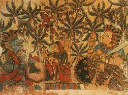

MAHARASTRA

The term Chitrakathi is the conjunction of two words: chitra meaning picture and katha meaning story. With this application, a Chitrakathi is the one who narrates stories with a visual aid. Thereby, one can imagine the rich tradition behind this art. In tribal life, there is a long-standing tradition of Chitrakathi's paintings. Wall paintings of Saora, Bhil, Gond and Warli are extremely popular in India and abroad. It’s an almost extinct art form practiced by the Thakar tribal community of Maharashtra. Chitrakathi artists are a community of migrating story tellers found all over Maharashra and some parts of Andhra Pradesh and Karnataka. They made a series of single sheets of paintings. All paintings belonging to one story were kept in a bundle called pothi. The Theme of Chitrakathi paintings include stories on local versions of Ramayana and Mahabharata and mythical themes. Use of brownish tones of stone colors gives a remarkable effect. Figures in paintings were generally stylized. These traditional art forms were lost in the villages of Maharashtra but the Greatest king of all times, Chhatrapati Shivaji Maharaj who were a lover of art, showed this talent to the world. These stories were conserved during attacks in temples but after the times were better Maharaj revived them and honoured this beautiful artform